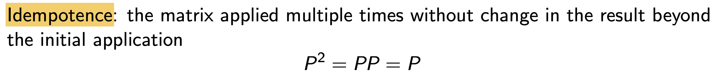
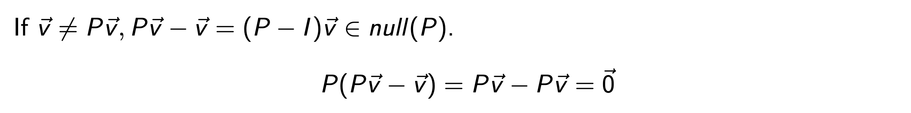
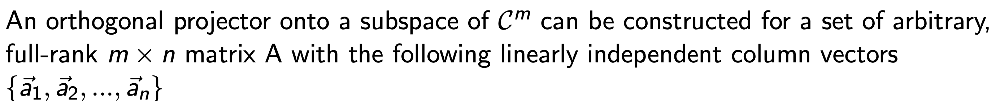
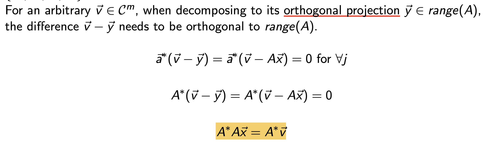
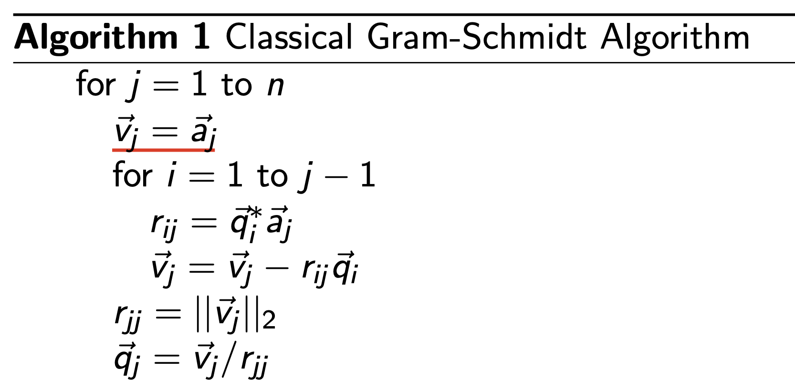
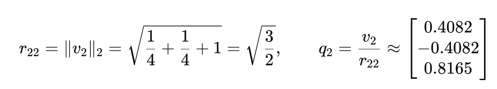
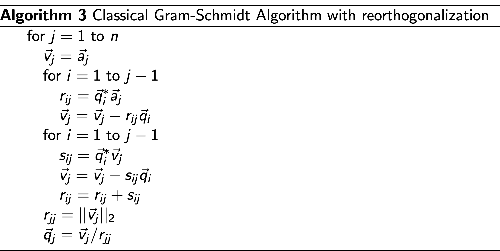

자 지난시간에는 아주 빠르게 Linear Algebra를 한번 쭉 살펴보았고,
이제 진짜 computer을 이용해서 Matrix Eq을 어떻게 효과적으로
구할 수 있을지에 대해서 살펴보자.
그 전에 projector Matrix를 정의하고 넘어가자.

1. Matrix P는 자기자신을 아무리 곱해도 자기자신이 나온다.

2. P의 열벡터의 선형결합으로 이루어진 벡터 v를
우리는 당연히 v = Px라고 할 수 있다.

신기하게 v = Px -> Pv = v
라는 아주 신기한 성질을 1번 성질로 유도가능.
만약에 v와 Pv가 다르다면??
Pv - v = 벡터 b라고 정의하면,
그렇다면, P b = 0 이 나오게 된다

즉 null의 정의에 따라서 null(P) = b = Pv - v
자 위 2,3 성질을 자세히 살펴보면,
v = Pv 이거나 v != Pv이렇게 두가지 경우로 v는 분리가 되고,
각각의 경우 range(P), null(P)임을 증명하였다.
따라서, 우리는 P가 벡터들을 두 공간으로 나눈다는 사실을 알 수 있다.
왜냐하면 null(P)이면서 range(P)는 정의상 불가능하므로,

즉 P는 range(P) 공간을 벡터를 mapping하는 matrix라는 것.

여기서 한발짝 더 나아가서 orthogonal Projector는 그중에서도,
P = P (transpose)성질을 만족하는 Projector라고 정의하자.

range(P) = v = Px
null(P) = (I-P)v
두 벡터를 내적하면 (P = P이므로) 0 이나옴을 알 수 있다.

결국, range(P)와 null(P)는 orthogonal 하다라고 할 수 있다.

여기서 Orthogonal Projector P 를 쪼갤 것이다.
P = Q QT 로 쪼개고 Q는 Orthonormal vectors
(orthogonal each other with a unit length)

자 이제 위 projector 개념을 이용해서, A로의 projection을 살펴보자.

임의의 벡터 v를 우리가 range(A) 로 projection한 벡터를 y라고 하자.
그렇다면, v - y 는 range(A)와 정의에 따라 수직 일 것이다.

따라서, 우리는 최종 노란식에 도달하게 된다.
즉 Projector의 정의에 따라서
y = P v = A x
x = (AA)-1 A v 이므로
y = P v = (A) (AA)-1 A v
따라서,

이후에 쓰이는 householder reflector개념도 짚고 넘어가자.


projector and its conjugate
위 두 matrix를 이용해서 우리는 x를 분해할 수 있다.
여기서 null(P) 우리가 orthogonal to P space (null(P)) 를 기준으로 P를 반사하여,
Reflection이라는 과정으로 새로운 벡터를 정의할 수 있다.
(추후에 쓰임, 그냥 정의만 알아두자)

Now we reach to the QR Factorization the main topic....
QRfactorization의 핵심은 A를 우리가 Q,R두개의 matrix로 분해하는 작업이다.
단순히 분해가 아니라 안에 핵심적인 의미는

A의
열벡터들을 확장하여 새로운 space를 구성
한다는 의미가 숨어져 있다.
A의 열벡터들을 가지고 우리가 Orthonormal vectors q1 q2 .... 를 제작하였다고 가정하자.

이제 그 orthonormal basis vector들로 A의 linear combination으로 column 벡터들을 구성할 수가 있다.
range(A) 공간이 결국 q1,q2 ... qn 을 basis vector로 두기 때문이다.
따라서, 이를 수학식으로 표현하면, a1 부터 aj까지를 다음과 같이 선형결합으로 표현가능하고,
그 계수들을 전부 합쳐놓은 matrix가 바로 R right triangular Matrix.

가장 간단하게 A 를 안다고 가정하고 Q,R을 구하는 기본적인 방식은
Gram - Schmidt Algorithm .

예시로 정확히 이해해보자. 다음과 같이 A (3 x 2)행렬이 있다고 하자.

먼저 우리는 첫번째 직교벡터 q1을 구할수 있고, 그 계수 r11도 도출가능하다.

두번째 과정은 a2에서 v1성분을 제거하고 normalize하여 새로운 v2를 정의하는 것.

j = 2
And normalize this.

따라서, 최종적응로, 우리는 Q,R행렬을 다음과 같이 유도가능하다.

하지만 위문제를 컴퓨터에서 풀때는 문제가 발생한다.
실제로 floating-point 연산 에서는 round-off error 때문에
새로 만든 q j 가 이전의 qi 들과 완전히 직교하지 않음 .
(컴퓨터 floating 저장 문제)
따라서, 직교화를 한번 더 진행하버리는
reOrthogonalization 방식을 사용하여, 수치적 오차를 줄이는
진화된 방식을 사용한다.(단순하게 한번더 직교화 해주고 rij에 추가항을 더해줌)

그렇다면 QR factorization을 도대체 어디다 쓰는가??
우리의 원초적인 목표는 Matrix Equation을 푸는 게 목표였다.

Ax = b에서, A를 QR로 쪼깬다면,

마지막에 Rx = y에서, R은 right triangle matrix이므로 마지막 row에서부터 차근차근 x를 쉽게 구할 수 가 있다.
(단 A가 nonsingular, full rank이라는 가정이 반드시 성립해야함)